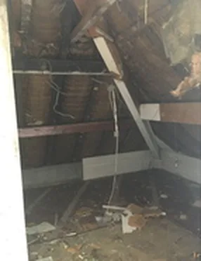
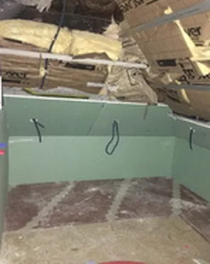
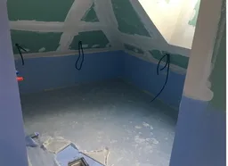

1 sur 8
Combles aménagés
Une pièce gagnée sous le toit. Au départ, la charpente était à nu. Les plaques de plâtre ont été posées et les murs préparés, avant l'enduit décoratif bleu-vert et le sol en pierre claire.
Travaux : Plâtrerie, enduit décoratif, peinture, sol en pierre
Avant et pendant les travaux

Charpente à nu
Plaques posées
Enduits en cours